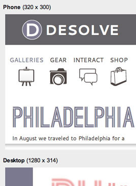

How can floating help inline flow?
Floating inline elements can help us wrap text around images, isolate emphasized content, and style complex regions like quotes, product descriptions, and blog comments.
When floated next to a block level element line boxes (such as lines of text) will shorten to make room for the margin box of the float. That means that while text will wrap around floated elements, the container of the text still behaves as if the floated element is removed from normal flow. Floated elements are always stacked on top of elements in normal flow when any overlapping occurs. This means that if an image is floated next to a paragraph, the lines of text will wrap around the image, but the paragraphs background color (if there is one) will appear behind the image.
Not all headlines should float.
Nothing is better than the world, you say. Nor is there, indeed, anything on earth better than the city of Rome; do you think, therefore, that our city has a mind; that it thinks and reasons; or that this most beautiful city, being void of sense, is not preferable to an ant, because an ant has sense, understanding, reason, and memory? You should consider, Balbus, what ought to be allowed you, and not advance things because they please you.
Creating drop caps
You can use floats to create dropcaps as well. Simply float the first letter of the desired paragraph and set the margins of the float to control spacing. If you want to drop cap a range of letters, simply use a span tag around the letters you want to drop. You can use relative positioning or top margins to help position the cap relative to the paragraph. Because the construct for float elements is a little different in earlier versions of Internet Explorer, if you're targeting versions prior to IE 8 you may need to feed slightly different margin values through conditional comments to have consistent styling. Firefox does NOT allow the dropcap to calculate its own line-height, forcing it to inherit it from the parent paragraph. WebKit based browsers will. This means that in order to have dropcaps line up consistently in WebKit based browsers and Firefox, you'll need to apply a line-height equal to the height of the cap (start at around .8, although you'll need to experiment with it based on the font you're using).
 Floating can help style complex regions like product descriptions, widgets, or other detailed regions that normal flow won't accomodate. Often, deciding how these regions should be styled is up to the designer, as there may be several different ways to arrive at the same layout.
Floating can help style complex regions like product descriptions, widgets, or other detailed regions that normal flow won't accomodate. Often, deciding how these regions should be styled is up to the designer, as there may be several different ways to arrive at the same layout.
More information
$19.95